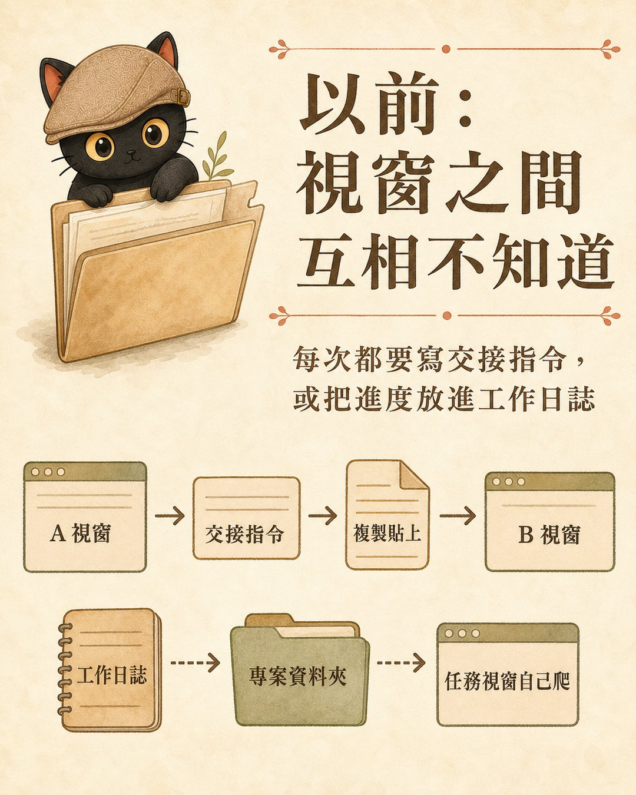
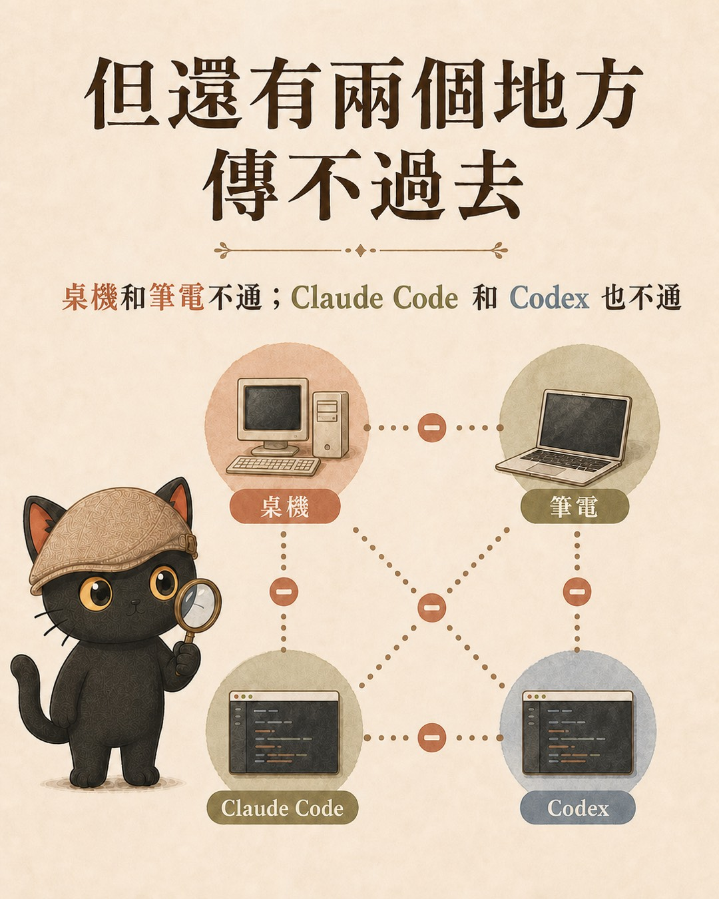
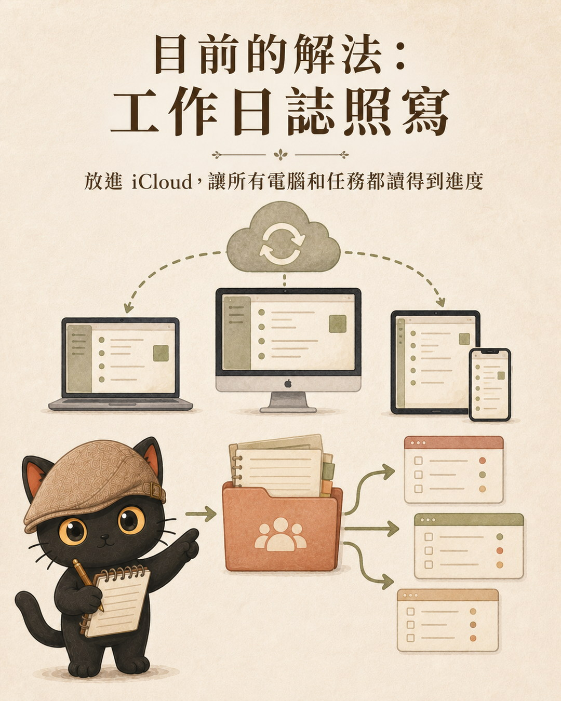

我實際用了一天，這篇講三件事：哪些以前要自己動手的麻煩真的消失了；哪四個地方訊息傳不到，所以老方法要留著；還有兩個視窗同時改同一個檔案的時候怎麼防。最後我把這些判斷寫成固定規則，以後每個 AI 視窗都照著走，不用每次重新交代。
- 同一個專案會開好幾個 AI 視窗，常常要自己在中間當傳聲筒的人
- 每次工具出新功能，就猶豫要不要把既有流程打掉重練的人
- 想知道「多視窗協作」的真相該放哪一層的人
- 新功能進場的判斷順序：先弄清楚它做不到什麼，再決定讓它接手什麼
- 交接前的四分支判斷：什麼時候傳訊息就好，什麼時候一定要寫檔案
- 撈舊對話的三步順序，和一個搜尋關鍵字的小技巧
一、以前的做法：我自己當傳聲筒
我同一個專案常常同時開好幾個視窗。一個在改架構，一個在寫內容。它們互相不知道對方在幹嘛。
所以我以前有兩招。第一招，請 A 視窗寫一份交接指令，我複製，貼到 B 視窗。第二招，讓每個視窗都把工作日誌寫進同一個專案資料夾，靠 iCloud 同步，誰要接手就自己去爬進度。

兩招都能用，但傳聲筒是我。每多開一個視窗，我的複製貼上就多一份。
現在 A 視窗可以直接傳摘要給 B 視窗，B 收到就知道進度到哪、該從哪裡接。我最頻繁的那段複製貼上，確實消失了。
二、先別急著改流程：這功能傳不到四個地方
新功能一來，我的習慣是先試出它的極限在哪，因為做不到的部分，決定了舊方法要留多少。實測下來，訊息傳不到四個地方：
- 跨機器。我在家用桌機、出門用筆電，兩台機器上的對話互相傳不到。
- 跨品牌。Claude 的對話傳不到 Codex，Codex 也發不進來。
- 無人值守的任務。排程自動跑的、遠端派出去的，收不到也發不出。
- 閒置的對話。訊息送到了，對方視窗沒人在跑，它就躺在那裡等，等到下次有人喚醒才被讀到。

這四個地方，我原本的做法一個都不能拆：跨機器靠 iCloud 同步的交接檔，跨品牌靠一份寫清楚的交接模板，無人值守靠檔案，工作日誌照寫。
三、定位：訊息是提醒層，檔案是真相層
邊界劃完，位子就出來了。我給這個功能的定位是一句話：
為什麼不讓訊息當真相？因為傳話就像在廚房裡喊「我要用這個爐子」。對方要聽到、而且理你，這句話才有用。如果另一個視窗正埋頭改檔案，它是做完手上那步才會看到訊息，那時候可能已經撞上了。喊聲不是門鎖。
兩個視窗同時改同一批檔案，防撞拆三層
開任務的時候，同一批檔案就不要同時丟給兩個視窗。只有我知道自己開了哪些任務，這層只有我能守。
動手前喊一聲，加上動手前先看一眼有沒有人登記在動這批檔。喊加看，雙向都做，漏接的機會就小。
就算真的撞了，git 會發現兩邊版本對不上，停下來要求先合併。撞了會卡住，但東西還在，救得回來。
新功能只補了中間那層。它讓 AI 之間少誤會，但它取代不了我自己不手賤，也取代不了檔案。
四、實戰：當天就上演了一次它該防的事
定位不是純理論，當天就用上了。
那天我開了三個相關的視窗：一個在討論這個新功能、一個 fork 出去寫脆文、一個前一晚剛改完官網部署流程。討論到一半才發現：前兩個視窗各自盤點完，都建議在同一個規則檔補同一段話，而且都停在「等我點頭就動筆」。
我要是兩邊都點了頭，就是兩個 AI 前後改同一個檔案，真實上演一次打架。
收斂的方式就是新功能本身：指定一個視窗當主場，由它發訊息給另外兩個。給脆文視窗的訊息說「這段規則由我這邊寫，你那邊放掉，你已經寫好的記憶檔保留當正本」；給部署視窗的訊息說「規則檔我先改、你排後面，你之後要退役的舊機制我的條文不會綁死」。傳完，三個視窗的分工就對齊了，重複施工消失。
順便修好了撈舊對話的順序
這場收斂有個前置動作：得先把那兩個視窗講過什麼「找出來」。就是在這一步，我發現撈舊對話也有它的正確順序。我請 AI 去找「另一個對話講過的內容」，它一開始拿我口中的形容詞去全文搜尋，撈回十筆全是雜訊。後來才確認順序應該是：
對話清單本來就按最後活動時間排。我的習慣是同一時段一口氣開好幾個任務、或從一個對話開分支，目標幾乎都擠在清單頂端。
分支會有標記，同一條線的標題長得很像，標題命中就直接讀內容。
而且要搜名詞：功能名、專案名、檔名、人名。事後的形容（「不適合」「很麻煩」）滿庫都是，搜了只有雜訊。
五、把判斷寫成規則，讓下一個 AI 不用重想一遍
最後一步，是把這些判斷寫成固定規則。我把它們寫進規則主檔和交接模板，寫完丟給另一家模型審。它抓出三個我沒堵住的洞，全部採納：
- 「發了訊息」可能被 AI 當成「交接完成」。補一句：真相層沒登記，就不算交接完成。
- 「可以不寫交接檔」可能被讀成「可以不留痕」。補一句：決定、進度、責任有變動，仍然要回寫檔案或看板；只有純提醒可以只發訊息。
- 對方閒置沒人看、或在不同工作目錄的，訊息不可靠，退回檔案交接。
寫完之後，交接前的判斷變成固定的四分支，任何一個接手的 AI 都照走：
六、我真正想要的東西還沒出現
老實說，我想要的是一個大總控台：桌機、筆電、Claude、Codex 的所有任務，全部統整在一個地方看。這個功能離那裡還很遠，它只打通了「同一台機器上的 Claude 對話」這一小格。
所以目前的答案還是老樣子：工作日誌照寫，放進 iCloud 同步，讓所有電腦、所有品牌的 AI，都能在專案資料夾裡讀到進度。

這也是我每次遇到新功能都不慌的原因。功能會一直出、也會一直變，但只要重要的東西都留在檔案裡，新功能來了就是多一層方便，走了也不傷筋骨。
流水的 AI 工具，鐵打的知識庫。